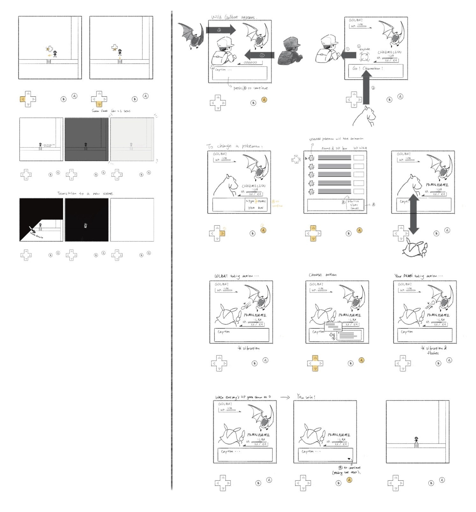
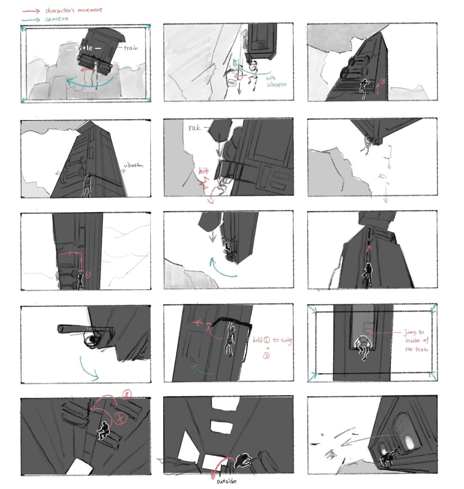

Lab 3
22/January/2026
Reverse Storyboards


Reflection
Partner's name: Ella
Q: What did your partner do differently from your storyboards?
Ella’s approach differs primarily in its technical density and the use of a formal annotation system. She has mapped out specific micro-interactions, such as screen flashes, smoke animations for Pokémon swaps, and the distinct movement of sprites sliding out of frame upon fainting. There’s a structured table beneath each frame to separate physical "Actions" from system "Interactions," providing a literal step-by-step guide for a developer.
Q: Did the differences enhance the storyboards, or make it more difficult to interpret the intended actions?
These differences enhance the storyboard by removing technical ambiguity. By explicitly labeling UI states and using a legend for symbols like text typing or pop animations, it ensures that the intended "game feel" is communicated alongside the mechanics.
Q: What, if anything, would you change about your storyboards considering the differences in your partner's work?
I could add a "notes" layer to define micro-moments like screen vibrations or transition effects. Incorporating a small legend or color-coding movement arrows would clarify the difference between player input and automated system feedback.